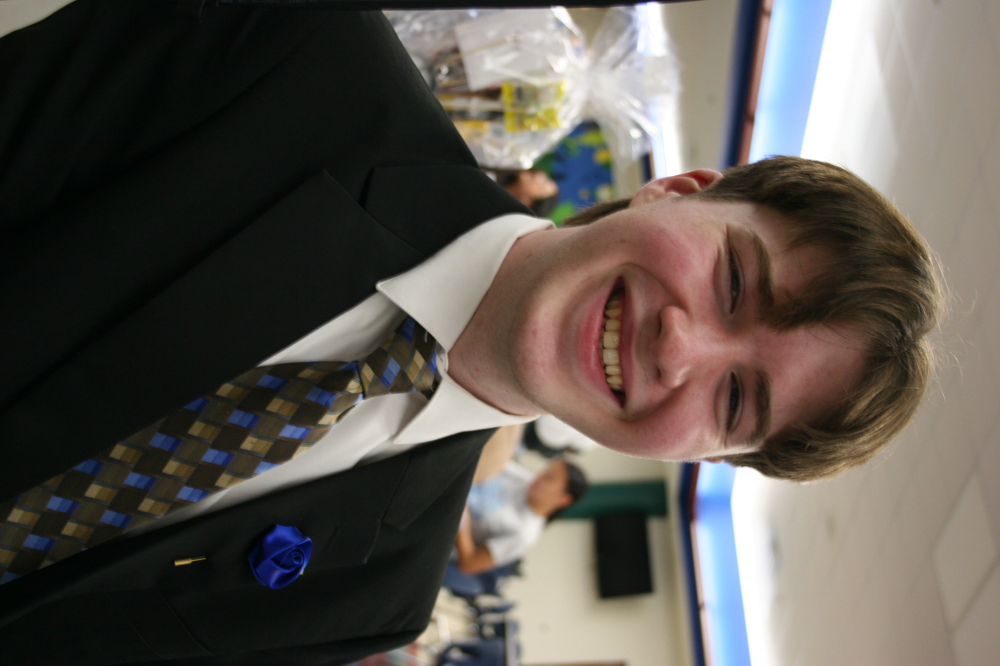
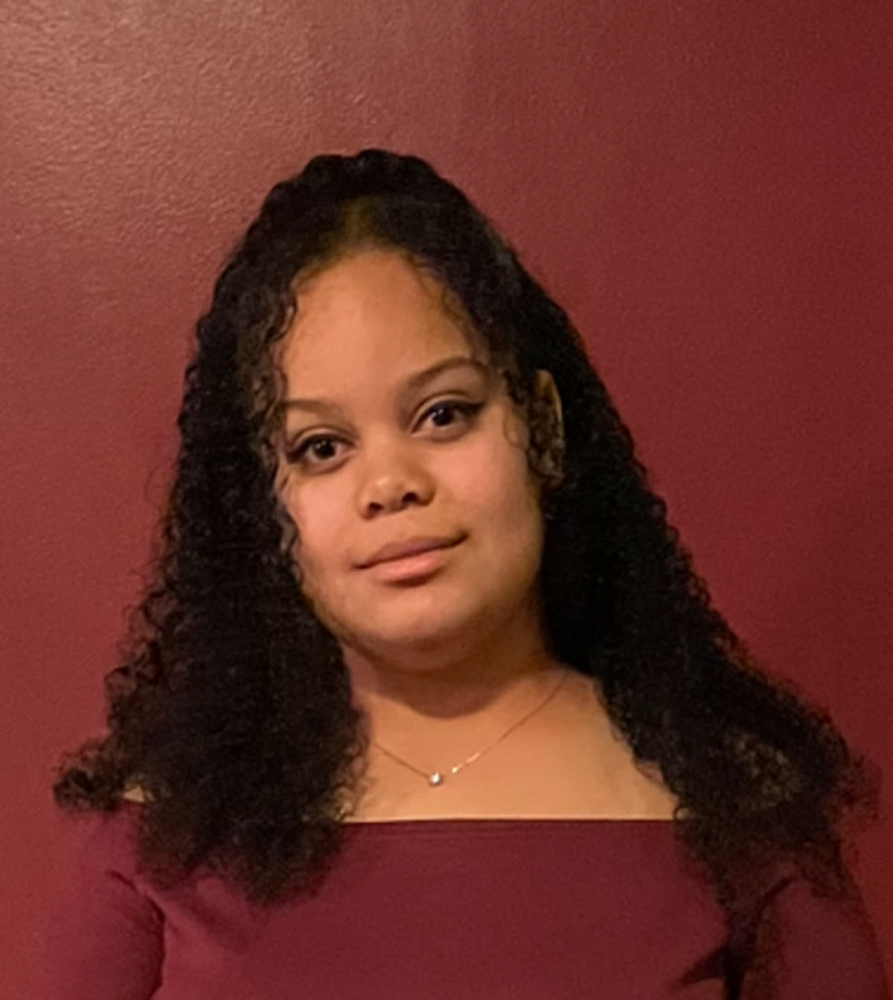
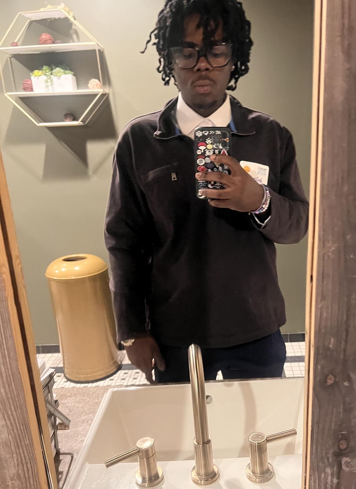

Mitchell Douglass
About me: I'm a freshman at IU Indianapolis, majoring in Informatics. I'm an orchestral musician at the University of Indianapolis, and I enjoy working on industrial controls and programming projects in my free time.
Contributions: Designed wireframes for data visualization, wrote and implemented the main UI of the page (navigation bar, backgrounds, and other). Wrote, tested, and iterated on data visualization. Wrote Python script to parse files from CSV -> JSON format, and created the standard to store that data. Hosted internal demo server for site testing. Wrote user study report.
Allyanna Brown
About me: Freshman at IU Indianapolis, majoring in Informatics. Likes writing, reading, and exploring nature.
Contributions: Designed wireframe for data description, wrote and implemented Data Description page. Main UX copywriter for the project - wrote most of the content you see on the pages! Created final presentation.
Akinwale Adesakin
About me: I'm a junior at IU Indianapolis majoring in Informatics, where I focus on developing technical and analytical skills related to data, technology, and problem-solving. Outside of my academic work, I spend much of my free time making music, which allows me to express my creativity and explore different sounds and ideas. I also enjoy going to the gym, as staying active helps me maintain discipline, reduce stress, and keep a healthy balance between my academic and personal life.
Contributions: Made Google Form for User Study Report. Created a Google Form to use as the main tool for my user study report. I made sure the questions were easy to understand so participants could give honest and useful feedback.
Tiffany Zheng

About me: Sophmore at IU Indianapolis, majoring in Informatics. Likes swimming, drawing, and hanging out with friends.
Contributions: Designed wireframes for about us, home page, and the navigation system. Found site-wide background image and created site color pallete. Wrote and implemented About Us page.